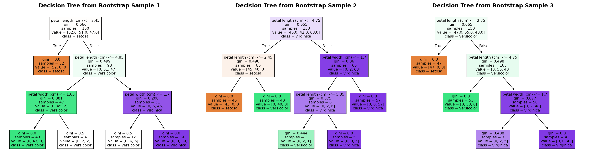
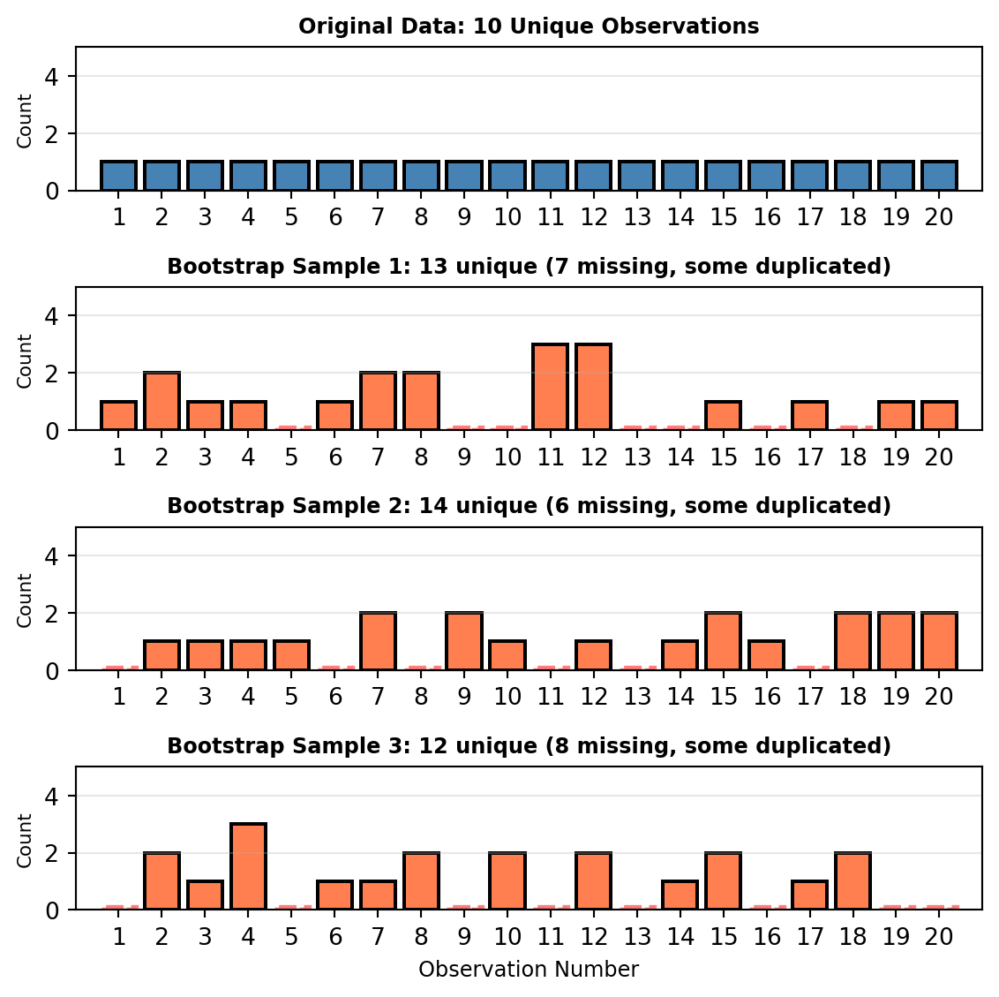
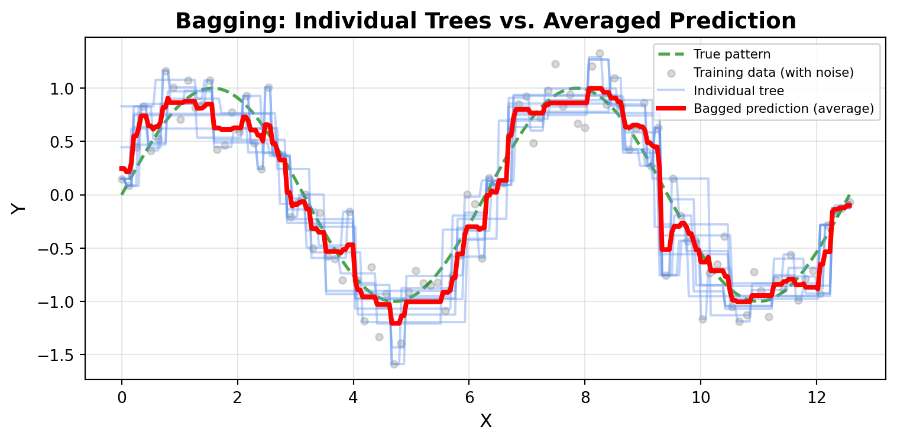
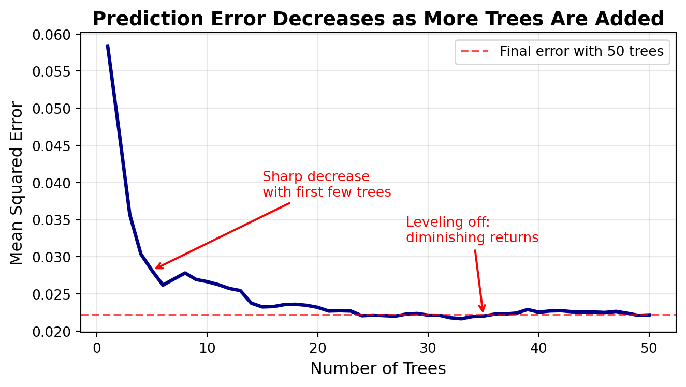
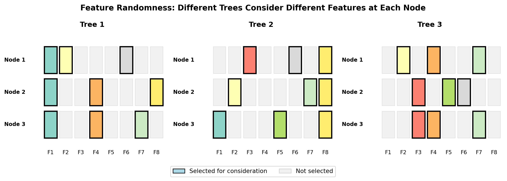
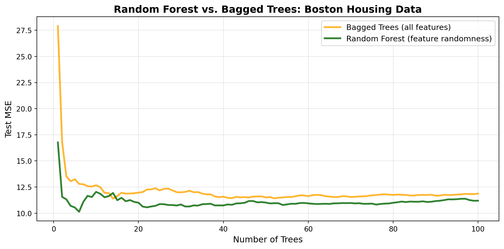
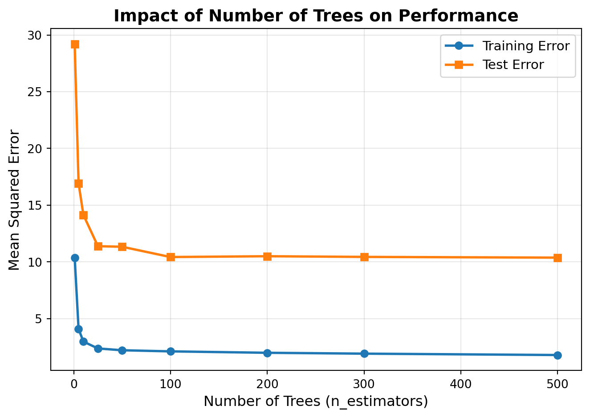
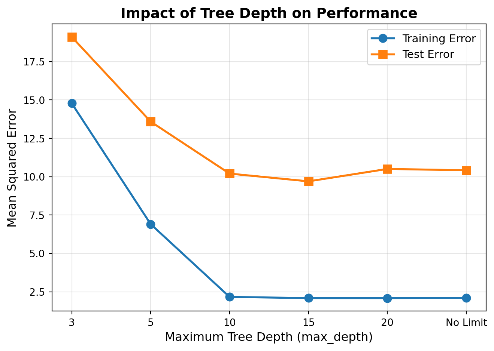
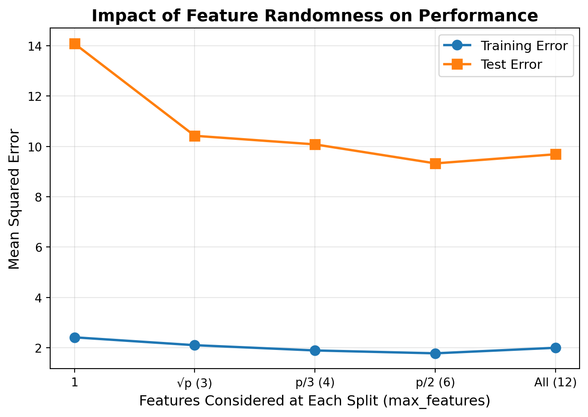
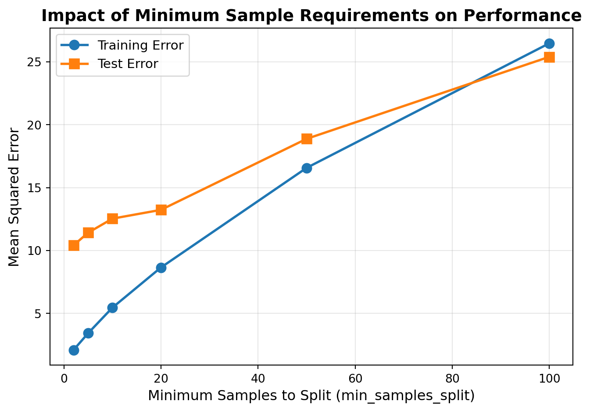

In business, critical decisions rarely rely on a single perspective. When making important choices, successful organizations typically:
Consult multiple experts rather than trusting one person’s judgment
Gather diverse viewpoints to reduce the risk of blind spots
Combine different data sources to get a complete picture
Use committee decisions for high-stakes choices like hiring or investments
NoteExperiential Learning
Think about a time when you made an important decision by gathering multiple opinions. Maybe you chose a restaurant by reading several review sites, selected a job offer after talking to multiple people, or made a purchase after comparing recommendations from different sources.
Write down one example where combining multiple perspectives led to a better decision than relying on a single source. What made the combined approach more reliable? By the end of this chapter, you’ll understand how random forests apply this same principle to machine learning.
This chapter introduces random forests, one of the most popular and effective machine learning algorithms in practice. Random forests apply the “wisdom of crowds” principle to machine learning: instead of relying on a single decision tree (which can be unstable and prone to overfitting), they build hundreds of trees on different samples of data and combine their predictions. Through two sources of randomness—bootstrap sampling and feature selection—random forests create diverse trees whose errors cancel out when averaged, resulting in models that are more accurate, stable, and robust than individual trees.
By the end of this chapter, you will be able to:
Explain how bootstrap aggregating (bagging) creates diverse decision trees
Understand how feature randomness decorrelates trees and improves performance
Build classification and regression models using RandomForestClassifier and RandomForestRegressor
Explain how random forests aggregate predictions through majority voting (classification) and averaging (regression)
Compare default vs. tuned random forest performance
Recognize advantages, limitations, and appropriate business applications for random forests
Note📓 Follow Along in Colab!
As you read through this chapter, we encourage you to follow along using the companion notebook in Google Colab (or another editor of your choice). This interactive notebook lets you run all the code examples covered here—and experiment with your own ideas.
In the previous chapter, you learned that decision trees are highly interpretable but can suffer from instability—small changes in the data can lead to very different trees. Additionally, complex trees tend to overfit, memorizing training data patterns that don’t generalize to new situations.
The Problem with Single Trees
While decision trees offer the advantage of interpretability (we can visualize and understand exactly how they make decisions), they suffer from a critical weakness: high variance. This means that small changes in the training data can produce dramatically different trees.
Think of it this way: if you asked three different analysts to build a decision tree using slightly different samples from the same dataset, you might get three very different models. One tree might split first on feature A, another on feature B, and a third on feature C—even though they’re all trying to solve the same problem with the same data!
This instability has serious business implications:
Unreliable predictions: A model that changes drastically with minor data variations is hard to trust
Poor generalization: Trees that are too sensitive to training data often overfit and perform poorly on new data
Inconsistent insights: Different trees might suggest different business strategies, making it unclear which features truly matter
Let’s demonstrate this instability with a concrete example. In the code below, we’ll create three different bootstrap samples (random samples with replacement) from the same dataset and train a decision tree on each. Even though all three samples come from the same underlying data, watch how the resulting trees have different structures:
Show code: Tree instability demonstration
# Show how small data changes create different treesimport pandas as pdimport numpy as npfrom sklearn.tree import DecisionTreeClassifierfrom sklearn.ensemble import RandomForestClassifierfrom sklearn.model_selection import train_test_splitfrom sklearn import treeimport matplotlib.pyplot as plt# Load a sample dataset (using the iris dataset as an example)from sklearn.datasets import load_irisiris = load_iris()X = pd.DataFrame(iris.data, columns=iris.feature_names)y = pd.Series(iris.target)# Set random seed for reproducibilitynp.random.seed(42)# Create three different bootstrap samples (sampling with replacement)n_samples =len(X)fig, axes = plt.subplots(1, 3, figsize=(18, 5))for i inrange(3):# Create bootstrap sample bootstrap_indices = np.random.choice(n_samples, size=n_samples, replace=True) X_bootstrap = X.iloc[bootstrap_indices] y_bootstrap = y.iloc[bootstrap_indices]# Train a decision tree on this bootstrap sample dt = DecisionTreeClassifier(max_depth=3, random_state=42) dt.fit(X_bootstrap, y_bootstrap)# Visualize the tree tree.plot_tree(dt, feature_names=iris.feature_names, class_names=iris.target_names, filled=True, ax=axes[i], fontsize=8) axes[i].set_title(f'Decision Tree from Bootstrap Sample {i+1}', fontsize=12, fontweight='bold')plt.tight_layout()plt.show()

Notice how the trees have different structures despite being trained on the same underlying dataset! This instability is a key weakness of individual decision trees that random forests address.
The Ensemble Solution
Random forests solve these problems by combining multiple trees that are each trained on slightly different versions of the data. The key insight is that while individual trees might make errors, their collective wisdom tends to be more reliable.
Two sources of diversity:
Bootstrap sampling: Each tree sees a different random sample of the training data
Feature randomness: Each split considers only a random subset of features
26.2 How Random Forests Work
Now that we’ve seen the instability problem with individual decision trees, let’s understand how random forests solve it. The core idea is surprisingly simple: instead of relying on a single tree, build many trees and let them vote.
This approach is called ensemble learning—combining multiple models to create a more powerful predictor. Think of it like consulting a panel of experts rather than trusting a single opinion. While any individual expert might be wrong, the collective wisdom of the group tends to be more reliable.
Random forests specifically use a technique called bootstrap aggregating (or “bagging”) combined with random feature selection. Here’s the three-step process:
Create diversity: Build each tree on a different random sample of the data
Add more randomness: At each split, consider only a random subset of features
Aggregate predictions: Combine all tree predictions through voting (classification) or averaging (regression)
The beauty of this approach is that while individual trees might be unstable and overfit to their particular training sample, the forest as a whole becomes stable and generalizes well. The errors of individual trees tend to cancel out, leaving more accurate predictions.
Let’s break down each component to understand how this works in practice.
Bootstrap Aggregating (Bagging)
Bootstrap aggregating, commonly called bagging, is the foundation of random forests. The technique involves two key steps:
Bootstrap: Create multiple random samples from your training data
Aggregate: Combine predictions from models trained on each sample
What is Bootstrap Sampling?
Bootstrap sampling is a statistical technique where you create a new dataset by randomly selecting observations from the original data with replacement. This means:
The new sample has the same size as the original dataset
Some observations appear multiple times (because of replacement)
Some observations don’t appear at all (approximately 37% are left out)
Here’s a simple analogy: Imagine you have a jar with 20 numbered balls (your training data). To create a bootstrap sample, you:
Randomly pick a ball, record its number, and put it back in the jar
Repeat this 20 times
You now have a new sample of 20 numbers—some will be duplicates, some won’t appear at all
Show code: Bootstrap sampling visualization
import numpy as npimport matplotlib.pyplot as pltimport matplotlib.patches as mpatches# Set random seed for reproducibilitynp.random.seed(42)# Create a simplified example with 10 data points for clarityoriginal_data = np.arange(1, 21)# Create 3 bootstrap samplesn_samples =3fig, axes = plt.subplots(n_samples +1, 1, figsize=(6, 6))# Plot original dataaxes[0].bar(original_data, [1]*len(original_data), color='steelblue', edgecolor='black', linewidth=1.5)axes[0].set_xlim(0, 21)axes[0].set_ylim(0, 5)axes[0].set_ylabel('Count', fontsize=8)axes[0].set_title('Original Data: 10 Unique Observations', fontsize=9, fontweight='bold')axes[0].set_xticks(original_data)axes[0].grid(axis='y', alpha=0.3)# Create and plot bootstrap samplesfor i inrange(n_samples):# Create bootstrap sample (sample with replacement) bootstrap_sample = np.random.choice(original_data, size=len(original_data), replace=True)# Count occurrences unique, counts = np.unique(bootstrap_sample, return_counts=True)# Identify which observations are missing missing =set(original_data) -set(unique) n_missing =len(missing)# Create bar plot axes[i+1].bar(unique, counts, color='coral', edgecolor='black', linewidth=1.5)# Mark missing values with light gray at bottomif missing: axes[i+1].bar(list(missing), [0.1]*len(missing), color='lightgray', edgecolor='red', linewidth=2, linestyle='--', alpha=0.5) axes[i+1].set_xlim(0, 21) axes[i+1].set_ylim(0, 5) axes[i+1].set_ylabel('Count', fontsize=8) axes[i+1].set_title(f'Bootstrap Sample {i+1}: {len(unique)} unique ({n_missing} missing, some duplicated)', fontsize=9, fontweight='bold') axes[i+1].set_xticks(original_data) axes[i+1].grid(axis='y', alpha=0.3)axes[n_samples].set_xlabel('Observation Number', fontsize=9)plt.tight_layout()plt.show()

TipUnderstanding the Visualization
In this simplified example with 20 observations:
Top panel: The original dataset contains observations 1-20, each appearing exactly once
Bottom three panels: Three different bootstrap samples, each created by randomly selecting 20 observations with replacement
Notice in each bootstrap sample:
Some observations appear multiple times (taller bars) - these were randomly selected more than once
Some observations are missing entirely (shown in gray with dashed outline) - they were never selected
Each sample is different, creating the diversity we need for random forests
How Bagging Creates Diversity
When you create multiple bootstrap samples and train a decision tree on each one, you get trees that:
See different data: Each tree trains on a unique random sample
Make different splits: Different data leads to different optimal split points
Capture different patterns: Some trees might focus on certain relationships, others on different ones
This diversity is precisely what we want! Remember the instability problem from earlier? Bagging embraces that instability and uses it to our advantage.
Why Averaging Helps
Here’s the key insight: if you have multiple models that each make somewhat independent errors, averaging their predictions reduces the overall error. This works because:
Errors cancel outt: When one tree overestimates, another might underestimate
Signal reinforces: True patterns appear across most trees
Noise diminishes: Random fluctuations don’t consistently appear
Mathematically, if you have n models with uncorrelated errors, the variance of the average prediction is approximately 1/n times the variance of a single model. This is why more trees generally lead to better performance.
Bagging in Practice
Let’s see bagging in action with a simple example:
Show code: Bagging demonstration
import numpy as npimport matplotlib.pyplot as pltfrom sklearn.tree import DecisionTreeRegressor# Set random seed for reproducibilitynp.random.seed(42)# Create data following a sin wave pattern with noiseX = np.linspace(0, 4*np.pi, 100).reshape(-1, 1)y_true = np.sin(X).ravel() # True underlying patterny = y_true + np.random.normal(0, 0.3, len(X)) # Add noise# Create a fine grid for smooth predictionsX_grid = np.linspace(0, 4*np.pi, 300).reshape(-1, 1)y_grid_true = np.sin(X_grid).ravel() # True pattern on grid# Train 10 trees on bootstrap samplesn_trees =10predictions = []fig, ax = plt.subplots(figsize=(8, 4))# Plot the true underlying patternax.plot(X_grid, y_grid_true, 'g--', linewidth=2, label='True pattern', alpha=0.7)# Plot training dataax.scatter(X, y, alpha=0.3, s=20, color='gray', label='Training data (with noise)')# Train trees and plot predictionsfor i inrange(n_trees):# Create bootstrap sample indices = np.random.choice(len(X), size=len(X), replace=True) X_bootstrap = X[indices] y_bootstrap = y[indices]# Train tree on bootstrap sample tree = DecisionTreeRegressor(max_depth=5, random_state=i) tree.fit(X_bootstrap, y_bootstrap)# Predict on grid y_pred = tree.predict(X_grid) predictions.append(y_pred)# Plot individual tree prediction ax.plot(X_grid, y_pred, alpha=0.4, linewidth=1.5, color='cornflowerblue', label='Individual tree'if i ==0else'')# Calculate and plot the average predictionavg_prediction = np.mean(predictions, axis=0)ax.plot(X_grid, avg_prediction, color='red', linewidth=3, label='Bagged prediction (average)', zorder=10)ax.set_xlabel('X', fontsize=12)ax.set_ylabel('Y', fontsize=12)ax.set_title('Bagging: Individual Trees vs. Averaged Prediction', fontsize=14, fontweight='bold')ax.legend(loc='upper right', fontsize=8)ax.grid(alpha=0.3)plt.tight_layout()plt.show()

NoteKey Observation
This visualization powerfully demonstrates the value of bagging:
True pattern (green dashed line): The underlying sin wave pattern we’re trying to learn
Training data (gray points): Noisy observations that obscure the true pattern
Individual trees (blue lines): Each tree makes large errors and fits the noise differently, creating erratic predictions
Bagged prediction (red line): The average of all 10 trees smooths out individual errors and closely follows the true pattern
Notice how the individual trees have high variance—some overshoot, others undershoot, and they all capture noise from their particular bootstrap sample. But when we average their predictions, these errors cancel out, leaving a smooth prediction that captures the true underlying pattern. This is the power of bagging!
The Power of More Trees
A natural question emerges: how many trees should we use? The beauty of bagging is that as we add more trees and average their predictions, we typically see a sharp decrease in overall prediction error. However, this improvement eventually levels off—after a certain point, adding more trees provides diminishing returns.
This happens because the first few trees capture the major patterns and reduce variance substantially. As we add more trees, we continue to smooth out errors, but the incremental improvement becomes smaller. In practice, random forests often use anywhere from 100 to 500 trees, though the optimal number depends on your specific problem.
Let’s visualize this relationship using our sin wave example:
Show code: Error reduction with increasing trees
import numpy as npimport matplotlib.pyplot as pltfrom sklearn.tree import DecisionTreeRegressorfrom sklearn.metrics import mean_squared_error# Set random seed for reproducibilitynp.random.seed(42)# Create the same sin wave dataX = np.linspace(0, 4*np.pi, 100).reshape(-1, 1)y_true = np.sin(X).ravel()y = y_true + np.random.normal(0, 0.3, len(X))# Create test grid to evaluate predictionsX_test = np.linspace(0, 4*np.pi, 200).reshape(-1, 1)y_test_true = np.sin(X_test).ravel()# Track errors as we add more treesmax_trees =50errors = []tree_counts =range(1, max_trees +1)# Store all tree predictionsall_predictions = []# Train trees one at a timefor i inrange(max_trees):# Create bootstrap sample indices = np.random.choice(len(X), size=len(X), replace=True) X_bootstrap = X[indices] y_bootstrap = y[indices]# Train tree tree = DecisionTreeRegressor(max_depth=5, random_state=i) tree.fit(X_bootstrap, y_bootstrap)# Predict on test set y_pred = tree.predict(X_test) all_predictions.append(y_pred)# Calculate error using average of all trees so far avg_prediction = np.mean(all_predictions, axis=0) mse = mean_squared_error(y_test_true, avg_prediction) errors.append(mse)# Plot error vs number of treesfig, ax = plt.subplots(figsize=(7, 4))ax.plot(tree_counts, errors, linewidth=2.5, color='darkblue')ax.axhline(y=errors[-1], color='red', linestyle='--', linewidth=1.5, label=f'Final error with {max_trees} trees', alpha=0.7)ax.set_xlabel('Number of Trees', fontsize=12)ax.set_ylabel('Mean Squared Error', fontsize=12)ax.set_title('Prediction Error Decreases as More Trees Are Added', fontsize=14, fontweight='bold')ax.grid(alpha=0.3)ax.legend(fontsize=10)# Annotate the sharp decreaseax.annotate('Sharp decrease\nwith first few trees', xy=(5, errors[4]), xytext=(15, errors[4] +0.01), arrowprops=dict(arrowstyle='->', color='red', lw=1.5), fontsize=10, color='red')# Annotate the leveling offax.annotate('Leveling off:\ndiminishing returns', xy=(35, errors[34]), xytext=(28, errors[34] +0.01), arrowprops=dict(arrowstyle='->', color='red', lw=1.5), fontsize=10, color='red')plt.tight_layout()plt.show()print(f"Error with 1 tree: {errors[0]:.4f}")print(f"Error with 10 trees: {errors[9]:.4f} (reduction: {(1- errors[9]/errors[0])*100:.1f}%)")print(f"Error with 50 trees: {errors[49]:.4f} (reduction: {(1- errors[49]/errors[0])*100:.1f}%)")

Error with 1 tree: 0.0583
Error with 10 trees: 0.0267 (reduction: 54.3%)
Error with 50 trees: 0.0222 (reduction: 62.0%)
ImportantThe Power of Averaging Across Diverse Bootstrap Samples
This plot beautifully illustrates why random forests are so effective:
Initial sharp decrease: The first 10-15 trees provide dramatic error reduction as diverse perspectives average out individual mistakes
Diminishing returns: After ~20 trees, each additional tree provides smaller improvements
Stability: With enough trees, prediction error stabilizes at a low level
The key insight: diversity through bootstrap sampling allows individual noisy predictions to cancel out when averaged, revealing the true underlying pattern. More trees mean more diverse perspectives, which means more accurate collective wisdom—at least up to a point!
In practice, random forests typically use 100-500 trees to ensure stable predictions while balancing computational cost.
What we’ve described so far—building multiple decision trees on bootstrap samples and averaging their predictions—is actually a complete machine learning technique called bagged trees (or bootstrap aggregated decision trees). Bagged trees are effective and widely used in practice.
However, they have a limitation: because all trees consider the same features when making splits, the trees can still be somewhat correlated, especially if there are a few very strong predictive features in the dataset. For example, if one feature is far more predictive than others, most trees will split on that feature first, making their predictions somewhat similar despite using different bootstrap samples.
Random forests address this limitation by adding one more crucial source of diversity: feature randomness.
Feature Randomness
Feature randomness is the key innovation that distinguishes random forests from simple bagged trees. Here’s how it works:
At each split in each tree, only consider a random subset of features (rather than all features).
This seemingly small change has a profound impact. By forcing each tree to work with different feature subsets, we ensure that trees develop different structures and capture different patterns—even when they’re trained on similar bootstrap samples.
How Feature Randomness Works
For a dataset with p total features, at each node when the tree needs to make a split:
Randomly select a subset of features (typically √p for classification, p/3 for regression)
Find the best split using only these randomly selected features
Repeat this process at every node in every tree
This means:
Different trees will split on different features at the same depth
A strong predictive feature won’t dominate every tree
Weaker features get a chance to contribute in some trees
Trees become more diverse and less correlated
The Impact of Feature Randomness
Consider a dataset where one or two features are very strong predictors. Without feature randomness:
Most trees would split on these dominant features first
Trees would have similar structures despite bootstrap sampling
Predictions would be correlated, limiting the benefit of averaging
With feature randomness:
Some trees split on dominant features, others on different ones
Trees explore different feature combinations
Predictions are more diverse, so averaging provides greater error reduction
Let’s visualize this concept:
Show code: Feature randomness visualization
import numpy as npimport matplotlib.pyplot as pltfrom matplotlib.patches import Rectangleimport matplotlib.patches as mpatches# Create a visualization showing feature selection at different nodesnp.random.seed(42)n_features =8n_trees =3n_nodes_per_tree =3fig, axes = plt.subplots(1, n_trees, figsize=(12, 4))feature_names = [f'F{i+1}'for i inrange(n_features)]colors = plt.cm.Set3(np.linspace(0, 1, n_features))for tree_idx inrange(n_trees): ax = axes[tree_idx]# For each node in this tree, randomly select features to considerfor node_idx inrange(n_nodes_per_tree):# Random subset of features (using sqrt(p) ~ 3 features for this example) n_selected =3 selected_features = np.random.choice(n_features, size=n_selected, replace=False) y_pos = n_nodes_per_tree - node_idx -1# Draw all features as light gray (not selected)for feat_idx inrange(n_features): x_pos = feat_idx *0.12if feat_idx in selected_features:# Selected features are colored rect = Rectangle((x_pos, y_pos*0.3), 0.1, 0.25, facecolor=colors[feat_idx], edgecolor='black', linewidth=2)else:# Not selected features are gray and faded rect = Rectangle((x_pos, y_pos*0.3), 0.1, 0.25, facecolor='lightgray', edgecolor='gray', linewidth=0.5, alpha=0.3) ax.add_patch(rect)# Add feature labels only on bottom rowif node_idx == n_nodes_per_tree -1: ax.text(x_pos +0.05, -0.15, feature_names[feat_idx], ha='center', fontsize=9)# Add node label ax.text(-0.15, y_pos*0.3+0.125, f'Node {node_idx+1}', ha='right', va='center', fontsize=9, fontweight='bold') ax.set_xlim(-0.2, n_features *0.12) ax.set_ylim(-0.25, n_nodes_per_tree *0.3+0.1) ax.axis('off') ax.set_title(f'Tree {tree_idx +1}', fontsize=12, fontweight='bold')# Add legendlegend_elements = [ mpatches.Patch(facecolor='lightblue', edgecolor='black', label='Selected for consideration'), mpatches.Patch(facecolor='lightgray', edgecolor='gray', label='Not selected', alpha=0.3)]fig.legend(handles=legend_elements, loc='lower center', ncol=2, fontsize=10, bbox_to_anchor=(0.5, -0.05))plt.suptitle('Feature Randomness: Different Trees Consider Different Features at Each Node', fontsize=13, fontweight='bold', y=0.98)plt.tight_layout()plt.show()

TipUnderstanding Feature Selection
This visualization shows three trees, each with three decision nodes. The eight features (F1-F8) are shown for each node:
Colored boxes: Features randomly selected for consideration at this node
Gray boxes: Features not available for this split
Notice how:
Each tree considers different random subsets of features at each node
No single feature dominates across all trees
The diversity of feature combinations leads to diverse tree structures
Bagged Trees vs. Random Forest Performance
Now let’s demonstrate the performance improvement that feature randomness provides. We’ll compare bagged trees (bootstrap only) against random forests (bootstrap + feature randomness) using the Boston housing data—a classic dataset for predicting median home values:
Show code: Bagged trees vs random forest comparison on housing data
import numpy as npimport pandas as pdimport matplotlib.pyplot as pltfrom sklearn.tree import DecisionTreeRegressorfrom sklearn.model_selection import train_test_splitfrom sklearn.metrics import mean_squared_errorfrom ISLP import load_data# Set random seednp.random.seed(42)# Load Boston housing dataBoston = load_data('Boston')# Separate features and targetX = Boston.drop('medv', axis=1).valuesy = Boston['medv'].valuesfeature_names = Boston.drop('medv', axis=1).columns.tolist()# Split dataX_train, X_test, y_train, y_test = train_test_split(X, y, test_size=0.3, random_state=42)print(f"Dataset: {len(X_train)} training samples, {X.shape[1]} features")print(f"Features: {feature_names}")print(f"Target: Median home value (in $1000s)\n")# Track performance as we add treesmax_trees =100tree_range =range(1, max_trees +1)# Bagged trees (all features at each split)# Using deeper trees (max_depth=None) to allow more overfitting, which makes# feature randomness more beneficialbagged_predictions = []bagged_mse = []for i inrange(max_trees):# Bootstrap sample indices = np.random.choice(len(X_train), size=len(X_train), replace=True) X_bootstrap = X_train[indices] y_bootstrap = y_train[indices]# Train tree with ALL features at each split - no depth limit tree = DecisionTreeRegressor(min_samples_split=10, min_samples_leaf=4, random_state=i) tree.fit(X_bootstrap, y_bootstrap)# Predict on test set y_pred = tree.predict(X_test) bagged_predictions.append(y_pred)# Calculate ensemble MSE (average predictions) avg_prediction = np.mean(bagged_predictions, axis=0) mse = mean_squared_error(y_test, avg_prediction) bagged_mse.append(mse)# Random forest (random feature subset at each split)rf_predictions = []rf_mse = []max_features = X_train.shape[1] //3# p/3 for regressionfor i inrange(max_trees):# Bootstrap sample indices = np.random.choice(len(X_train), size=len(X_train), replace=True) X_bootstrap = X_train[indices] y_bootstrap = y_train[indices]# Train tree with RANDOM SUBSET of features at each split - no depth limit tree = DecisionTreeRegressor(max_features=max_features, min_samples_split=10, min_samples_leaf=4, random_state=i) tree.fit(X_bootstrap, y_bootstrap)# Predict on test set y_pred = tree.predict(X_test) rf_predictions.append(y_pred)# Calculate ensemble MSE (average predictions) avg_prediction = np.mean(rf_predictions, axis=0) mse = mean_squared_error(y_test, avg_prediction) rf_mse.append(mse)# Plot comparisonfig, ax = plt.subplots(figsize=(10, 5))ax.plot(tree_range, bagged_mse, linewidth=2.5, color='orange', label='Bagged Trees (all features)', alpha=0.8)ax.plot(tree_range, rf_mse, linewidth=2.5, color='darkgreen', label='Random Forest (feature randomness)', alpha=0.8)ax.set_xlabel('Number of Trees', fontsize=12)ax.set_ylabel('Test MSE', fontsize=12)ax.set_title('Random Forest vs. Bagged Trees: Boston Housing Data', fontsize=14, fontweight='bold')ax.legend(fontsize=11)ax.grid(alpha=0.3)plt.tight_layout()plt.show()print(f"\nFinal Performance Comparison ({max_trees} trees):")print(f"Bagged Trees MSE: {bagged_mse[-1]:.4f}")print(f"Random Forest MSE: {rf_mse[-1]:.4f}")print(f"Improvement: {((bagged_mse[-1] - rf_mse[-1]) / bagged_mse[-1] *100):.1f}%")print(f"\nRMSE (in $1000s):")print(f"Bagged Trees: ${np.sqrt(bagged_mse[-1]):.3f}k")print(f"Random Forest: ${np.sqrt(rf_mse[-1]):.3f}k")
Dataset: 354 training samples, 12 features
Features: ['crim', 'zn', 'indus', 'chas', 'nox', 'rm', 'age', 'dis', 'rad', 'tax', 'ptratio', 'lstat']
Target: Median home value (in $1000s)

Final Performance Comparison (100 trees):
Bagged Trees MSE: 11.8729
Random Forest MSE: 11.1917
Improvement: 5.7%
RMSE (in $1000s):
Bagged Trees: $3.446k
Random Forest: $3.345k
ImportantThe Power of Feature Randomness
This real-world example demonstrates why random forests outperform simple bagged trees:
Bagged trees (orange): Achieve good performance through bootstrap sampling alone
Random forests (green): Achieve consistently better performance by adding feature randomness
The improvement comes from decorrelating the trees. When trees are forced to consider different feature subsets, they:
Explore different feature combinations and interactions
Make more independent errors that cancel out when averaged
Discover useful patterns that might be masked by dominant features
Provide more stable and accurate predictions
This is especially powerful in datasets with:
Strong dominant features that would otherwise control all trees
Many correlated or redundant features
Complex interactions between features that different trees can explore differently
The combination of bootstrap sampling AND feature randomness is what makes random forests one of the most effective machine learning algorithms available.
26.3 Building Random Forest Models
Now that you understand how random forests work conceptually—combining bootstrap sampling and feature randomness to create diverse trees—let’s put this into practice. In this section, we’ll use scikit-learn’s RandomForestClassifier and RandomForestRegressor to build models for both classification and regression problems. You’ll see how simple it is to implement random forests in practice, and how to understand what’s happening under the hood when the algorithm makes predictions.
Classification with Random Forests
Let’s start with a classification example using the Default dataset from ISLP, which predicts whether credit card customers will default on their payments.
import numpy as npimport pandas as pdfrom sklearn.ensemble import RandomForestClassifierfrom sklearn.model_selection import train_test_splitfrom sklearn.metrics import confusion_matrix, classification_reportfrom ISLP import load_data# Set random seednp.random.seed(42)# Load Default datasetDefault = load_data('Default')# Prepare features and targetX_default = pd.get_dummies(Default[['balance', 'income', 'student']], drop_first=True)y_default = (Default['default'] =='Yes').astype(int)# Split dataX_train_default, X_test_default, y_train_default, y_test_default = train_test_split( X_default, y_default, test_size=0.3, random_state=42)# Build and train random forest classifier with 100 treesrf_classifier = RandomForestClassifier(n_estimators=100, random_state=42)rf_classifier.fit(X_train_default, y_train_default)# Make predictionsy_pred_default = rf_classifier.predict(X_test_default)# Evaluate performancecm = confusion_matrix(y_test_default, y_pred_default)print("Confusion Matrix:")print(cm)print("\nClassification Report:")print(classification_report(y_test_default, y_pred_default, target_names=['No Default', 'Default']))
Random forests make classification predictions through majority voting:
Each tree votes: All 100 trees independently predict a class (0 or 1)
Count the votes: Tally how many trees predict each class
Majority wins: The class with the most votes becomes the final prediction
Probabilities: The predicted probability is the proportion of votes (e.g., 73/100 = 0.73)
This voting mechanism makes random forests robust—even if some individual trees make mistakes, the collective wisdom of the majority typically gets it right!
Regression with Random Forests
Now let’s see a regression example using the College dataset from ISLP, which predicts the number of applications received by colleges.
from sklearn.ensemble import RandomForestRegressorfrom sklearn.metrics import root_mean_squared_error# Set random seednp.random.seed(42)# Load College datasetCollege = load_data('College')# Select features and target# We'll predict number of applications (Apps) using other college characteristicsfeature_cols = ['Accept', 'Enroll', 'Top10perc', 'Top25perc', 'F.Undergrad','P.Undergrad', 'Outstate', 'Room.Board', 'Books', 'Personal','PhD', 'Terminal', 'S.F.Ratio', 'perc.alumni', 'Expend', 'Grad.Rate']X_college = College[feature_cols]y_college = College['Apps']# Split dataX_train_college, X_test_college, y_train_college, y_test_college = train_test_split( X_college, y_college, test_size=0.3, random_state=42)# Build and train random forest regressor with 100 treesrf_regressor = RandomForestRegressor(n_estimators=100, random_state=42)rf_regressor.fit(X_train_college, y_train_college)# Make predictionsy_pred_college = rf_regressor.predict(X_test_college)# Evaluate performancermse = root_mean_squared_error(y_test_college, y_pred_college)print("Model Performance:")print(f"RMSE: {rmse:,.0f} applications")print(f"Mean actual applications: {y_test_college.mean():,.0f}")print(f"RMSE as % of mean: {(rmse / y_test_college.mean() *100):.1f}%")
Model Performance:
RMSE: 1,207 applications
Mean actual applications: 3,088
RMSE as % of mean: 39.1%
NoteHow Regression Predictions Work: Averaging
Random forests make regression predictions through averaging:
Each tree predicts: All 100 trees independently predict a numeric value
Calculate the mean: Average all predictions: (tree₁ + tree₂ + … + tree₁₀₀) / 100
Average is the final prediction: This becomes the model’s prediction
This averaging mechanism reduces prediction variance. While individual trees might over or underestimate based on their specific bootstrap sample, the average smooths out these fluctuations, resulting in more stable and accurate predictions!
Key Hyperparameters
Random forests have several important hyperparameters that control how the forest is built and how individual trees behave. Understanding these parameters helps you build effective models. Let’s explore the most critical ones and see how they impact model performance. We’ll cover hyperparameter tuning strategies in a later chapter, but for now, let’s understand what each parameter does.
n_estimators: Number of Trees in the Forest
The n_estimators parameter controls how many decision trees are built in the forest. More trees generally lead to better performance, but with diminishing returns.
More trees = better performance (up to a point)
Diminishing returns after ~100-500 trees
Computational tradeoff: more trees = longer training time
Show code: Impact of n_estimators
import numpy as npimport matplotlib.pyplot as pltfrom sklearn.ensemble import RandomForestRegressorfrom sklearn.model_selection import train_test_splitfrom sklearn.metrics import mean_squared_error# Load dataBoston = load_data('Boston')X = Boston.drop('medv', axis=1)y = Boston['medv']X_train, X_test, y_train, y_test = train_test_split(X, y, test_size=0.3, random_state=42)# Test different numbers of treestree_counts = [1, 5, 10, 25, 50, 100, 200, 300, 500]train_errors = []test_errors = []for n_trees in tree_counts: rf = RandomForestRegressor(n_estimators=n_trees, random_state=42, max_features='sqrt') rf.fit(X_train, y_train) train_pred = rf.predict(X_train) test_pred = rf.predict(X_test) train_errors.append(mean_squared_error(y_train, train_pred)) test_errors.append(mean_squared_error(y_test, test_pred))# Plotfig, ax = plt.subplots(figsize=(7, 5))ax.plot(tree_counts, train_errors, 'o-', label='Training Error', linewidth=2)ax.plot(tree_counts, test_errors, 's-', label='Test Error', linewidth=2)ax.set_xlabel('Number of Trees (n_estimators)', fontsize=12)ax.set_ylabel('Mean Squared Error', fontsize=12)ax.set_title('Impact of Number of Trees on Performance', fontsize=14, fontweight='bold')ax.legend(fontsize=11)ax.grid(alpha=0.3)plt.tight_layout()plt.show()print(f"Test MSE with 10 trees: {test_errors[2]:.4f}")print(f"Test MSE with 100 trees: {test_errors[5]:.4f}")print(f"Test MSE with 500 trees: {test_errors[8]:.4f}")print(f"\nImprovement from 10 to 100 trees: {((test_errors[2] - test_errors[5])/test_errors[2]*100):.1f}%")print(f"Improvement from 100 to 500 trees: {((test_errors[5] - test_errors[8])/test_errors[5]*100):.1f}%")

Test MSE with 10 trees: 14.1304
Test MSE with 100 trees: 10.4205
Test MSE with 500 trees: 10.3674
Improvement from 10 to 100 trees: 26.3%
Improvement from 100 to 500 trees: 0.5%
max_depth: Maximum Depth of Individual Trees
The max_depth parameter limits how deep each tree can grow. Deeper trees can capture more complex patterns but risk overfitting.
Shallow trees (depth 3-10): Simple patterns, less overfitting, faster training
Medium trees (depth 10-20): Balance complexity and generalization
Deep trees (no limit): Maximum flexibility, relies on ensemble averaging to prevent overfitting
Random forests can handle deeper trees than individual decision trees because the ensemble averaging reduces overfitting.
Show code: Impact of max_depth
# Test different maximum depthsdepths = [3, 5, 10, 15, 20, None] # None means no limitdepth_labels = ['3', '5', '10', '15', '20', 'No Limit']train_errors = []test_errors = []for depth in depths: rf = RandomForestRegressor(n_estimators=100, max_depth=depth, random_state=42, max_features='sqrt') rf.fit(X_train, y_train) train_pred = rf.predict(X_train) test_pred = rf.predict(X_test) train_errors.append(mean_squared_error(y_train, train_pred)) test_errors.append(mean_squared_error(y_test, test_pred))# Plotfig, ax = plt.subplots(figsize=(7, 5))x_pos = np.arange(len(depths))ax.plot(x_pos, train_errors, 'o-', label='Training Error', linewidth=2, markersize=8)ax.plot(x_pos, test_errors, 's-', label='Test Error', linewidth=2, markersize=8)ax.set_xticks(x_pos)ax.set_xticklabels(depth_labels)ax.set_xlabel('Maximum Tree Depth (max_depth)', fontsize=12)ax.set_ylabel('Mean Squared Error', fontsize=12)ax.set_title('Impact of Tree Depth on Performance', fontsize=14, fontweight='bold')ax.legend(fontsize=11)ax.grid(alpha=0.3)plt.tight_layout()plt.show()print(f"Best test MSE achieved with max_depth = {depth_labels[np.argmin(test_errors)]}")print(f"Test MSE: {min(test_errors):.4f}")

Best test MSE achieved with max_depth = 15
Test MSE: 9.7002
max_features: Features Considered at Each Split
The max_features parameter controls how many features are randomly selected at each split. This is the key parameter for controlling tree diversity!
‘sqrt’ or √p: Common choice for classification - good default, high diversity
p/3: Common choice for regression - provides good balance of diversity and performance
‘log2’: Consider log₂(p) features - even more diversity, useful for high-dimensional data
None or p: Consider all p features - equivalent to bagged trees, less diversity
Integer or float: Specific number or fraction of features to consider
Note: Sklearn’s default is ‘sqrt’ for RandomForestClassifier and 1.0 (all features) for RandomForestRegressor, but p/3 is often recommended for regression in practice.
Show code: Impact of max_features
# Test different max_features settingsn_features = X_train.shape[1]max_features_options = [1, int(np.sqrt(n_features)), n_features //3, n_features //2, n_features]feature_labels = ['1', f'√p ({int(np.sqrt(n_features))})', f'p/3 ({n_features //3})',f'p/2 ({n_features //2})', f'All ({n_features})']train_errors = []test_errors = []for max_feat in max_features_options: rf = RandomForestRegressor(n_estimators=100, max_features=max_feat, random_state=42) rf.fit(X_train, y_train) train_pred = rf.predict(X_train) test_pred = rf.predict(X_test) train_errors.append(mean_squared_error(y_train, train_pred)) test_errors.append(mean_squared_error(y_test, test_pred))# Plotfig, ax = plt.subplots(figsize=(7, 5))x_pos = np.arange(len(max_features_options))ax.plot(x_pos, train_errors, 'o-', label='Training Error', linewidth=2, markersize=8)ax.plot(x_pos, test_errors, 's-', label='Test Error', linewidth=2, markersize=8)ax.set_xticks(x_pos)ax.set_xticklabels(feature_labels, rotation=0)ax.set_xlabel('Features Considered at Each Split (max_features)', fontsize=12)ax.set_ylabel('Mean Squared Error', fontsize=12)ax.set_title('Impact of Feature Randomness on Performance', fontsize=14, fontweight='bold')ax.legend(fontsize=11)ax.grid(alpha=0.3)plt.tight_layout()plt.show()print(f"\nBest test MSE achieved with max_features = {feature_labels[np.argmin(test_errors)]}")

Best test MSE achieved with max_features = p/2 (6)
min_samples_split and min_samples_leaf: Controlling Tree Complexity
These parameters prevent trees from making splits on very small groups of samples:
min_samples_split: Minimum samples required to split a node (default: 2)
min_samples_leaf: Minimum samples required in a leaf node (default: 1)
Increasing these values creates simpler, more regularized trees that are less likely to overfit but are also less accurate.
Show code: Impact of min_samples_split
# Test different min_samples_split valuesmin_samples_options = [2, 5, 10, 20, 50, 100]train_errors = []test_errors = []for min_samp in min_samples_options: rf = RandomForestRegressor(n_estimators=100, min_samples_split=min_samp, random_state=42, max_features='sqrt') rf.fit(X_train, y_train) train_pred = rf.predict(X_train) test_pred = rf.predict(X_test) train_errors.append(mean_squared_error(y_train, train_pred)) test_errors.append(mean_squared_error(y_test, test_pred))# Plotfig, ax = plt.subplots(figsize=(7, 5))ax.plot(min_samples_options, train_errors, 'o-', label='Training Error', linewidth=2, markersize=8)ax.plot(min_samples_options, test_errors, 's-', label='Test Error', linewidth=2, markersize=8)ax.set_xlabel('Minimum Samples to Split (min_samples_split)', fontsize=12)ax.set_ylabel('Mean Squared Error', fontsize=12)ax.set_title('Impact of Minimum Sample Requirements on Performance', fontsize=14, fontweight='bold')ax.legend(fontsize=11)ax.grid(alpha=0.3)plt.tight_layout()plt.show()print(f"Best test MSE achieved with min_samples_split = {min_samples_options[np.argmin(test_errors)]}")

Best test MSE achieved with min_samples_split = 2
TipPractical Guidelines for Hyperparameter Selection
Based on these demonstrations, here are some practical starting points:
Hyperparameter
Classification
Regression
Purpose
n_estimators
100-200
100-200
Number of trees (more = better, but diminishing returns)
max_features
‘sqrt’
p/3 or ‘sqrt’
Features to consider at each split (controls diversity)
max_depth
None
None
Maximum tree depth (None = no limit)
min_samples_split
2
2
Minimum samples to split a node (increase if overfitting)
min_samples_leaf
1
1
Minimum samples in leaf node (increase if overfitting)
The beauty of random forests is that they work well “out of the box” with default parameters. The ensemble averaging makes them robust to overfitting, so you often don’t need extensive tuning. That said, systematic hyperparameter tuning (covered in a later chapter) can squeeze out additional performance when needed.
Default vs. Tuned Random Forests
In a later chapter, we’ll discuss efficient ways to find the optimal combination of hyperparameters using techniques like grid search and randomized search. For now, let’s see how a default random forest compares to one with manually tuned hyperparameters on the Ames housing dataset.
from sklearn.ensemble import RandomForestRegressor# Default random forest (using sklearn defaults)rf_default = RandomForestRegressor(random_state=42)rf_default.fit(X_train_ames, y_train_ames)# Predict and evaluatey_pred_default = rf_default.predict(X_test_ames)rmse_default = root_mean_squared_error(y_test_ames, y_pred_default)print("Default Random Forest Performance:")print(f" RMSE: ${rmse_default:,.0f}")print(f" RMSE as % of mean: {(rmse_default / y_test_ames.mean() *100):.1f}%")print(f"\nDefault hyperparameters used:")print(f" n_estimators: {rf_default.n_estimators}")print(f" max_features: {rf_default.max_features}")print(f" max_depth: {rf_default.max_depth}")print(f" min_samples_split: {rf_default.min_samples_split}")print(f" min_samples_leaf: {rf_default.min_samples_leaf}")
Default Random Forest Performance:
RMSE: $26,923
RMSE as % of mean: 15.0%
Default hyperparameters used:
n_estimators: 100
max_features: 1.0
max_depth: None
min_samples_split: 2
min_samples_leaf: 1
# Tuned random forest (using optimal hyperparameters from grid search)rf_tuned = RandomForestRegressor( n_estimators=300, # vs. default 100 - more trees improve performance max_features=18, # vs. default all features - p/3 increases tree diversity max_depth=20, # vs. default None - limits overfitting min_samples_split=2, # same as default - no change needed min_samples_leaf=1, # same as default - no change needed random_state=42)rf_tuned.fit(X_train_ames, y_train_ames)# Predict and evaluatey_pred_tuned = rf_tuned.predict(X_test_ames)rmse_tuned = root_mean_squared_error(y_test_ames, y_pred_tuned)print("\nTuned Random Forest Performance:")print(f" RMSE: ${rmse_tuned:,.0f}")print(f" RMSE as % of mean: {(rmse_tuned / y_test_ames.mean() *100):.1f}%")print(f"\nTuned hyperparameters used:")print(f" n_estimators: {rf_tuned.n_estimators}")print(f" max_features: {rf_tuned.max_features}")print(f" max_depth: {rf_tuned.max_depth}")print(f" min_samples_split: {rf_tuned.min_samples_split}")print(f" min_samples_leaf: {rf_tuned.min_samples_leaf}")
Tuned Random Forest Performance:
RMSE: $26,843
RMSE as % of mean: 14.9%
Tuned hyperparameters used:
n_estimators: 300
max_features: 18
max_depth: 20
min_samples_split: 2
min_samples_leaf: 1
# Compare the two modelsimprovement = ((rmse_default - rmse_tuned) / rmse_default) *100print("\n"+"="*60)print("Performance Comparison")print("="*60)print(f"Default RMSE: ${rmse_default:,.0f}")print(f"Tuned RMSE: ${rmse_tuned:,.0f}")print(f"Improvement: {improvement:.1f}%")
Default random forests work well: Even with default settings, random forests achieve strong performance
Tuning can help: Thoughtful hyperparameter selection can improve performance, though gains are often modest
Diminishing returns: The improvement from tuning is typically smaller than the jump from a single tree to a random forest
Efficient tuning matters: In later chapters, we’ll learn systematic approaches (grid search, random search) to efficiently explore the hyperparameter space rather than manual trial-and-error
26.4 Random Forests in Business Context
Random forests have become one of the most widely used machine learning algorithms in practice due to their strong performance, robustness, and ease of use. Understanding when and where to apply them is crucial for business analytics.
Advantages Over Other Methods
Why random forests are popular in business applications:
Robust performance: Handle outliers, noisy data, and missing values without extensive preprocessing
Minimal tuning required: Work well with default parameters, reducing time from development to deployment
Versatile: Effective for both classification and regression across diverse problem types
Reduce overfitting: Ensemble averaging makes them more reliable than single decision trees
Handle mixed data: Work naturally with both numeric and categorical features
Provide insights: Built-in feature importance (covered in next chapter) helps identify key drivers
Limitations to Consider
When random forests may not be the best choice:
Interpretability: Harder to explain predictions than a single decision tree (though feature importance helps—see next chapter)
Computational cost: Training hundreds of trees requires more time and memory than simpler models
Large datasets: Can become memory-intensive with millions of observations
Real-time predictions: Slower prediction time than linear models due to querying many trees
Extrapolation: Like all tree-based methods, struggle to predict beyond the range of training data
Industry Applications
Random forests excel in business environments where decisions need to balance accuracy with interpretability and where data is often messy or incomplete. Here are some common applications across industries:
Finance: Banks and financial institutions use random forests to assess credit risk by predicting loan default probability and detect fraudulent transactions in real-time by identifying unusual patterns (Li and Zhang 2021; Khan and Malik 2024). Random forests have proven particularly effective for these applications due to their ability to handle imbalanced datasets and capture complex nonlinear relationships in financial data.
Healthcare: Hospitals deploy random forests to predict which patients are at high risk for readmission (helping allocate resources), assist in disease diagnosis by analyzing patient symptoms and test results, and forecast treatment outcomes to personalize care plans (Hussain and Al-Obeidat 2024; Kim and Park 2021). The algorithm’s robustness to missing data makes it especially valuable in healthcare settings.
Marketing & Retail: Marketing teams rely on random forests to predict customer churn (identifying at-risk customers before they leave), score leads for sales prioritization, segment customers into actionable groups, and model response rates for targeted campaigns (Wang and Chen 2023; Calvo and Fernandez 2024). The ability to handle large numbers of customer behavior features makes random forests ideal for these applications.
E-commerce: Online retailers use random forests to power recommendation engines (predicting what customers might purchase next), optimize pricing strategies based on demand and competition, and forecast product demand across different regions and time periods.
Operations & Manufacturing: Companies implement random forests for predictive maintenance (forecasting equipment failures before they occur) and quality control (identifying defective products) (Schmidt and Hoffmann 2023; Zhao 2024). The algorithm’s capacity to learn from historical sensor data and equipment logs helps prevent costly downtime.
Human Resources: HR departments apply random forests to predict employee attrition (helping retain valuable talent), score job candidates to improve hiring decisions, and forecast employee performance to guide development programs.
TipWhy Random Forests Work Well in Business
Random forests’ ability to handle complex, messy real-world data with minimal preprocessing makes them a go-to algorithm for many business analytics teams. While they may not always achieve the absolute highest accuracy (gradient boosting methods sometimes edge them out), their reliability, ease of use, and ability to provide feature importance insights often make them the practical choice for production systems.
26.5 Summary
Random forests transform the instability of individual decision trees into a strength by combining hundreds of trees trained on different data samples. The key insight: while any single tree might overfit or make errors, the collective wisdom of diverse trees averages out mistakes, producing accurate and stable predictions.
Random forests create diversity through two mechanisms: bootstrap aggregating (each tree trains on a random sample with replacement) and feature randomness (each split considers only a random subset of features—typically √p for classification, p/3 for regression). These mechanisms decorrelate trees and prevent dominant features from controlling the forest. Predictions aggregate through majority voting (classification) or averaging (regression).
We explored key hyperparameters including n_estimators, max_features, max_depth, and minimum sample requirements. An important practical finding: random forests work remarkably well with default settings, requiring minimal tuning. This “out-of-the-box” effectiveness makes them ideal for business applications across industries—from credit risk assessment and fraud detection to customer churn prediction and predictive maintenance.
However, one question remains: which features actually matter? In the next chapter, we’ll explore feature importance—a built-in mechanism for quantifying each feature’s contribution to predictions and identifying the key drivers behind your outcomes.
26.6 End of Chapter Exercise
For these exercises, you’ll compare decision trees to random forests across real business scenarios. Each exercise will help you understand how ensemble methods improve upon individual trees and how hyperparameter tuning can further enhance performance.
Hussain, A., and F. Al-Obeidat. 2024. “A Machine Learning Model to Predict Heart Failure Readmission: Toward Optimal Feature Set.”Frontiers in Artificial Intelligence 7: 1363226. https://doi.org/10.3389/frai.2024.1363226.
Khan, A., and R. Malik. 2024. “Predictive Power of Random Forests in Analyzing Risk Management Practices and Concerns in Islamic Banks.”Journal of Risk and Financial Management 17 (3): 104. https://doi.org/10.3390/jrfm17030104.
Li, H., and Y. Zhang. 2021. “Financial Credit Risk Control Strategy Based on Weighted Random Forest Algorithm.”Journal of Applied Mathematics, 1–9. https://doi.org/10.1155/2021/6276155.
Schmidt, L., and M. Hoffmann. 2023. “Using Machine Learning Prediction Models for Quality Control: A Case Study from the Automotive Industry.”Journal of Intelligent Manufacturing. https://doi.org/10.1007/s10287-023-00448-0.